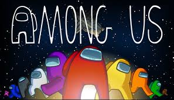

Among Us es un juego de deducción social multijugador en línea El juego se desarrolla en en un entorno de temática espacial en el que los jugadores se enfrentan a uno de dos roles, la mayoría siendo compañeros de tripulación, y un número predeterminado son impostores.
El objetivo de los Crewmates es identificar a los impostores, eliminarlos y completar tareas en el mapa; El objetivo de los impostores es sabotear y matar de forma encubierta a los Crewmates antes de que completen todas sus tareas
Es un juego de acción y aventuras de 2020 desarrollado por Naughty Dog Ambientada cinco años después de The Last of Us (2013), el jugador controla dos personajes en Estados Unidos postapocalíptico cuyas vidas se entrelazan: Ellie , que busca venganza después de sufrir una tragedia, y Abby, una soldado que se ve envuelta en una conflicto con una secta. El juego se juega desde la perspectiva de la tercera persona . Los jugadores pueden usar armas de fuego, armas improvisadas y sigilo. para luchar contra enemigos humanos y criaturas caníbales.
Resident Evil 3 es unjuego de terror de supervivencia desarrollado y publicado por Capcom . Es un remake de Resident Evil 3: Nemesis (1999) y sigue a Jill Valentine y Carlos Oliveira mientras intentan sobrevivir a un apocalipsis zombie mientras son perseguidos por la inteligente arma biológica Nemesis . Fue lanzado en Microsoft Windows , PlayStation 4 y Xbox One el 3 de abril de 2020. También incluye unmodo multijugador en línea , Resident Evil: Resistance
Hasta 60 jugadores compiten en partidos con un estilo de juego de Battle Royale.Los jugadores , representados como figuras con forma de gelatina, se mueven por un campo de juego tridimensional, con movimientos adicionales como saltar, agarrar / trepar o zambullirse para ayudar en el juego. El objetivo es calificar para rondas posteriores completando con éxito cada uno de los minijuegos seleccionados al azar.